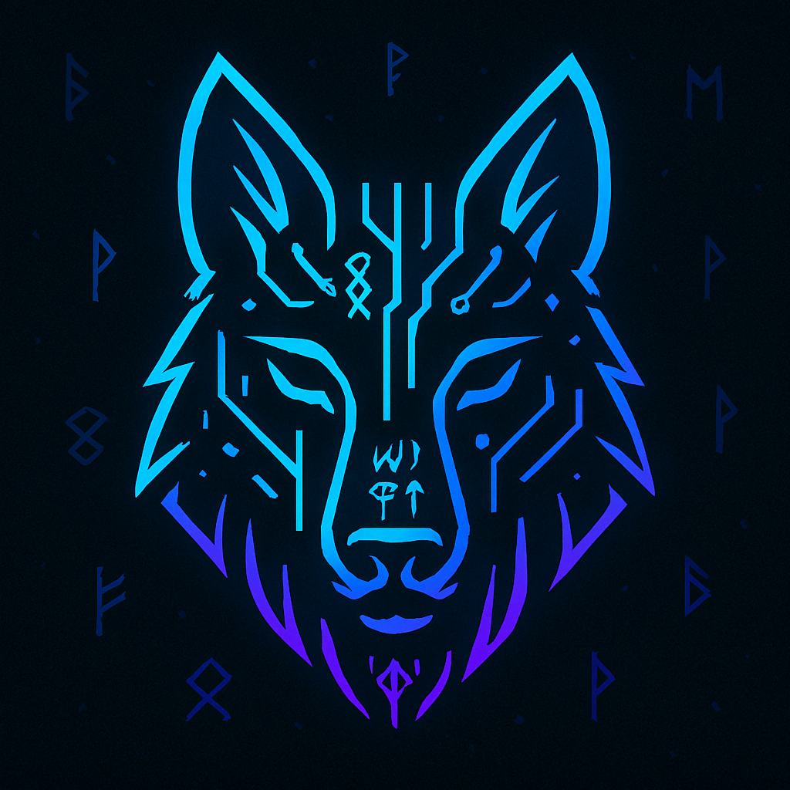

Wer ist Whitewelpe?

Hey, ich bin Wölfi 👋
Ich bin ein kreativer Kopf, Tech-Tüftler und Cyber-Wolf mit Herz für Automatisierung, VRChat, Game-Server und AI. Tagsüber Kfz-Mechatroniker, nachts Coder mit dem Ziel, Software-Entwickler zu werden – am liebsten mit Fokus auf KI, Tools und Sprachsteuerung.
Meine Lieblingssprachen: Python, C# und JavaScript. Betriebssysteme? NixOS & Windows. Tools? JetBrains IDEs, eigene Server & Custom-Tools.
Vision: Ein eigenes JARVIS-ähnliches System, das zuhört, denkt, spricht – und mich unterstützt. 🧠💬